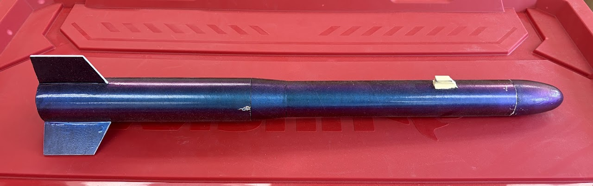
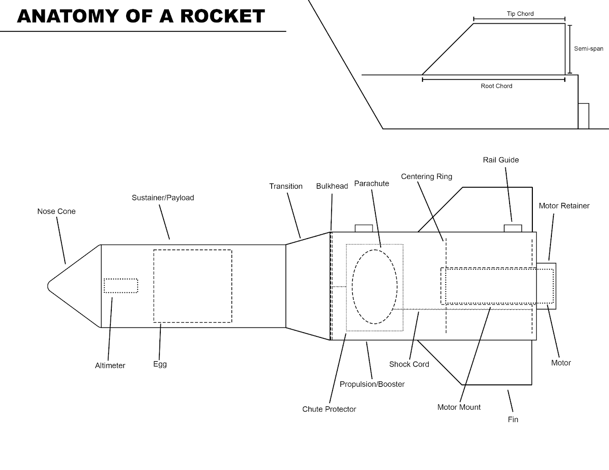
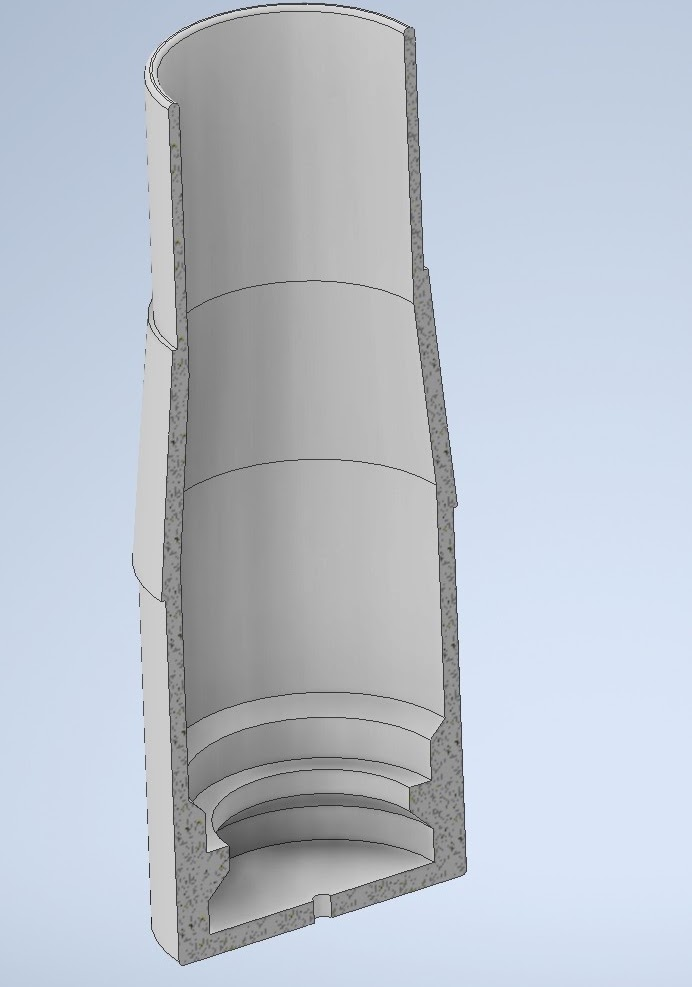
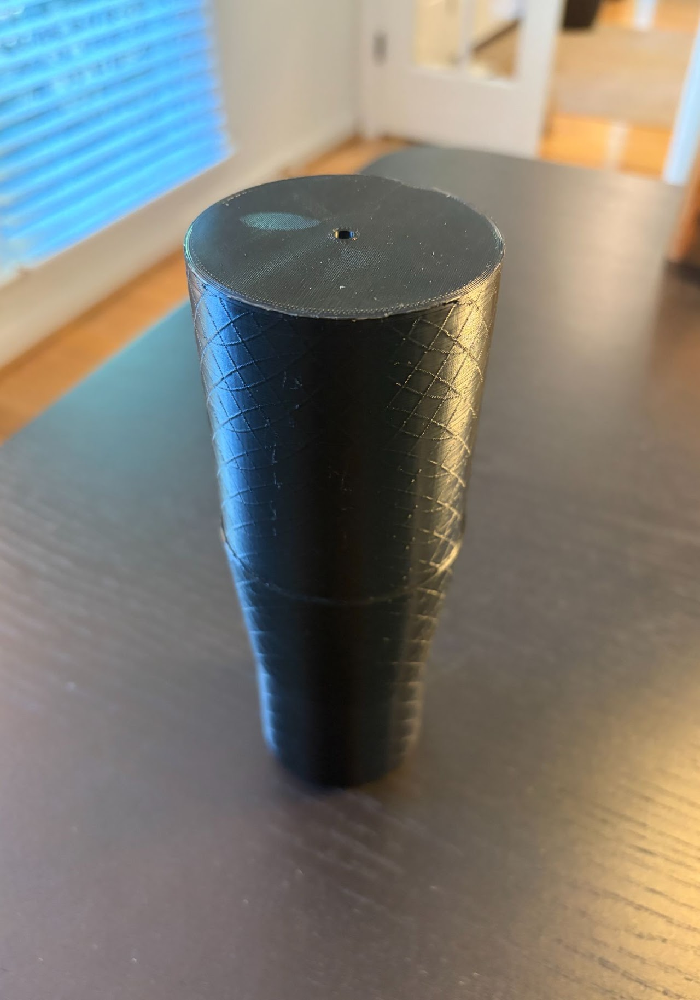
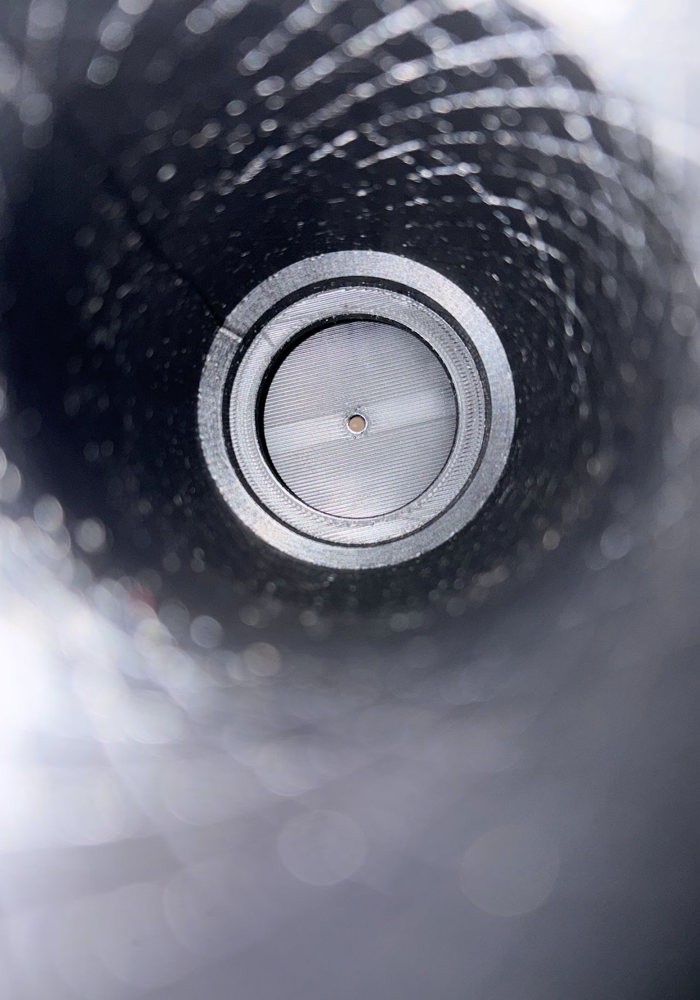
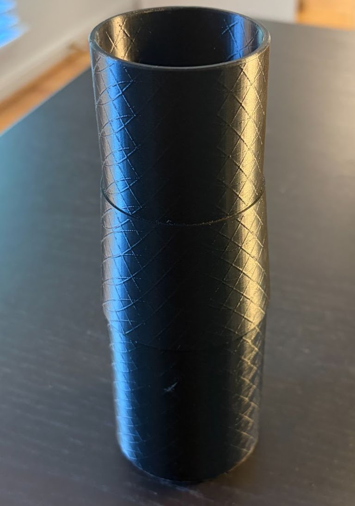
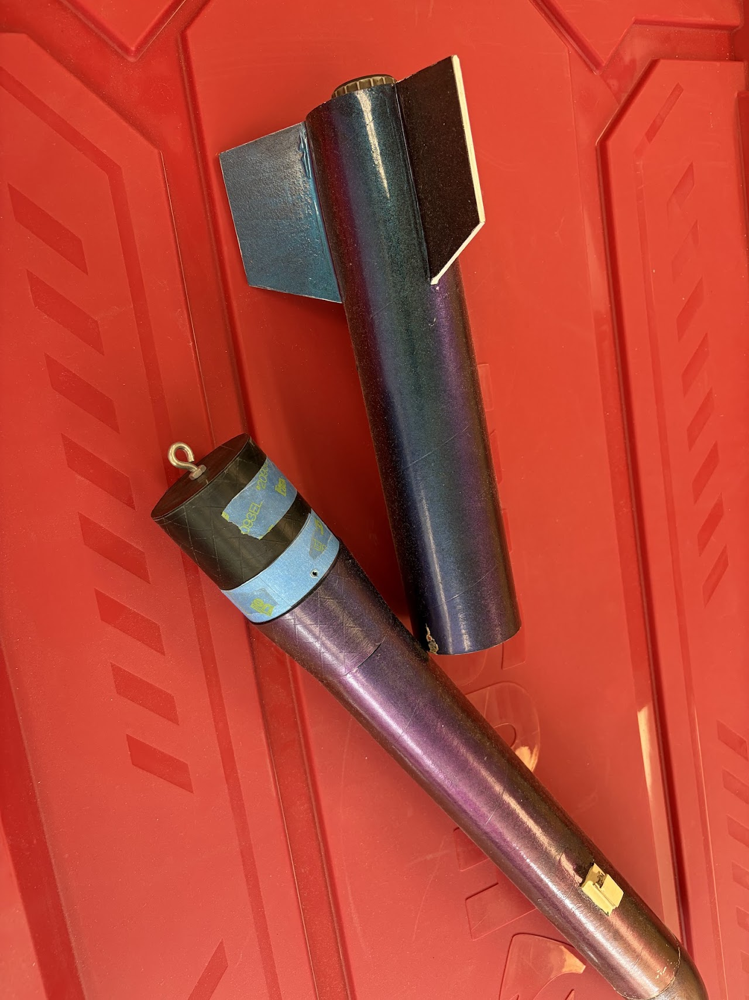
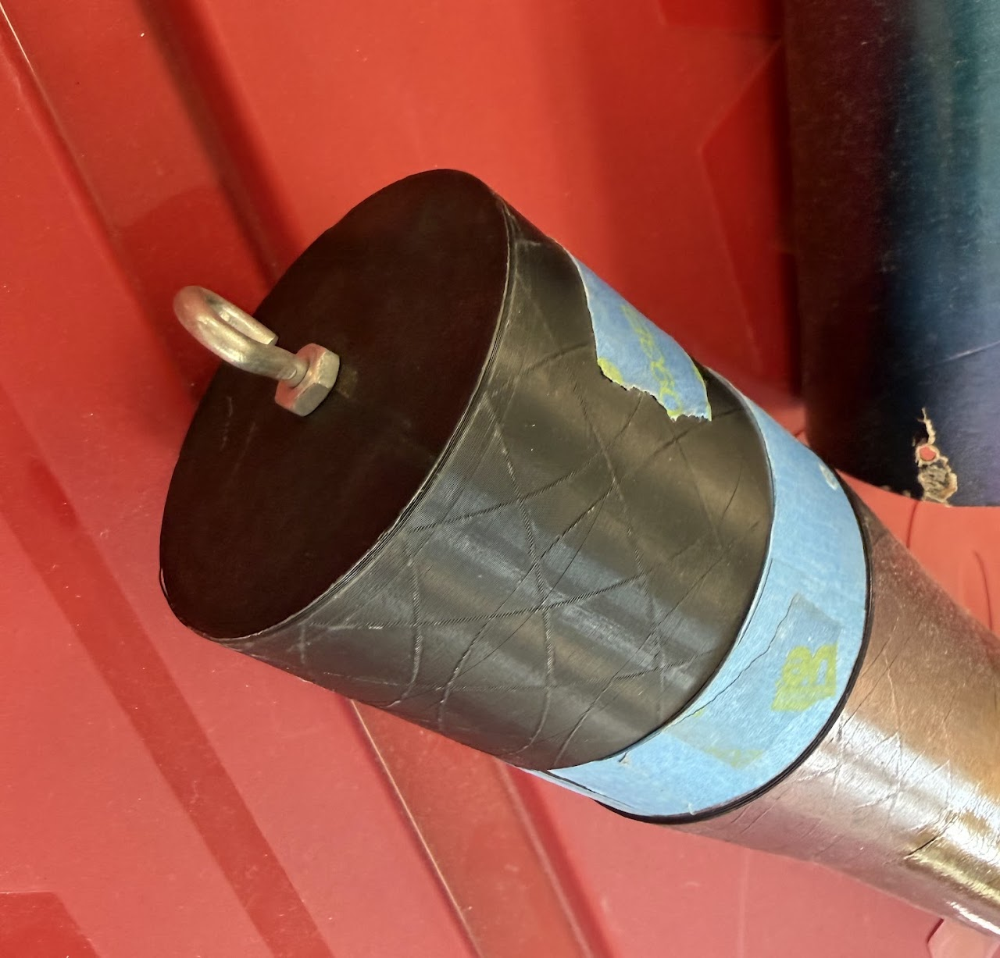
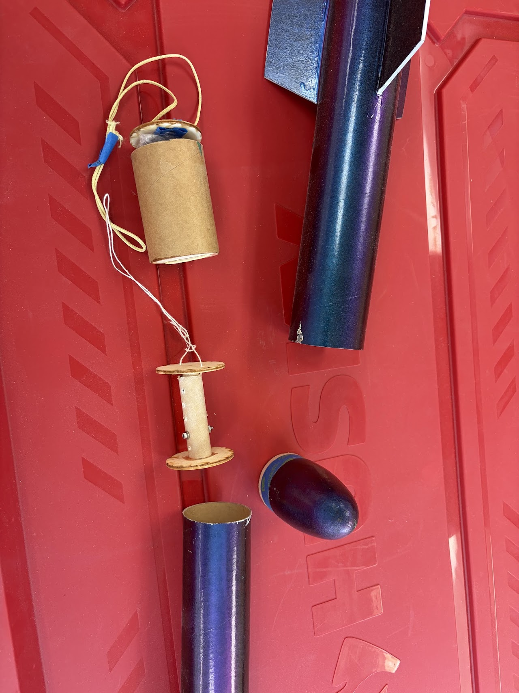

Some background for this project:
For the 2024 American Rocket Challenge, the TARC ruleset required all rocket designs to have a different diameter tube for the bottom portion of the rocket and the top portion of the rocket. This necessitates a piece that transitions between the two sizes of the rocket in the middle. You can see this transition piece in the rocket above. An issue my team ran into was that we could not get an ideal weight balance for our rocket because our center of gravity was inside the transition. See the below diagram (designed in Adobe Illustrator) for insight on the parts of a TARC rocket.

With a traditional pre-fab rocket transition, we could only move our ballast (added mass for tuning the max altitude of the rocket) so far down as pre-fab transitions are usually solid balsa wood or blow-molded plastic, so it is not possible to place things inside of them. If we could not place the ballast where the center of gravity is, any changes to the mass of the ballast would result in a shift in the rocket's center of gravity, throwing off the stability.
Stability is determined by the distance between the center of pressure and center of gravity. When designing a rocket in Openrocket I aim for a stability value of 1.7-2.0 cal depending on the design. Through experience, I have found 1.8 to be a good sweet-spot for where we usually launch in Virginia.
As a solution to this issue, I decided to design a 3d-printable transition that was hollow, allowing us to place our ballast, or even our payload of 1 raw egg, inside of the transition, on our center of gravity, allowing us to maintain our ideal stability target of 1.8 cal even when adjusting the mass of the ballast.
It was designed in Autodesk Inventor.




The hole in the bottom is to screw an eye bolt into, where the parachute would attach. The PLA served to be much stronger than the balsa-wood transitions we occasionally used, where the eye bolt would sometimes get ripped out after the ejection charge went off. Below are a few images of the transition installed in a TARC rocket, which I also designed (in Openrocket).


See (above) the eye bolt that the parachute cord attaches to.

The other pieces in this leftmost image are carriers for the egg (top) and a spacer (bottom) that can be placed at different places in the rocket to adjust the center of gravity depending on launch conditions or test-flight results.
With the help of this transition, this rocket achieved several great launches including a few single-digit point test launches. In TARC, a launch's point value is determined by two things: time and apogee (height). For every foot you are off the target height (820ft for the 2024-2025 season) you get 1 point. For every second you are off from the target time range of 43-46 seconds (to launch and descend safely) you get 4 points. So a single-digit launch is quite good.
Below is a video of the rocket with the transition installed performing as expected during separation (the stage with the highest stress on the transition).